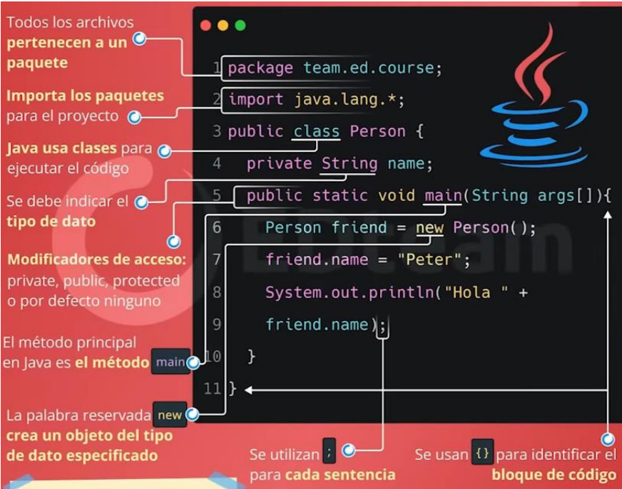

CLASE 01
30-04-2024
Comandos básicos en Visual Estudio Code
Todos los comandos a continuacion son ejecutables en windows:
- CTRL + SHIFT + P: Abre la paleta de comandos.
- CTRL + P: Abre el buscador de archivos.
- CTRL + B: Abre y cierra la barra lateral.
- CTRL + D: Activa el multi-cursor.
- SHIFT + ALT + UP / SHIFT + ALT + DOWN: Seleccionar toda la linea de codigo.
- SHIFT + ALT + A: Comentar varias lineas de codigo.
- CTRL + K + C: Comentar una linea de codigo.
- ALT + —->: Retroceder o avanzar.
- CTRL + T: Mostrar comandos.
- CTRL + ESPACIO: Sugerencias de activacion.
CLASE 02
01-05-2024
Markdown
Es un lenguaje de marcado, su extension es “.md”, se usara para anotar los apuntes de la clases y se puede transformar a pdf. Tiene varias funcionalidades para resaltar de diversas formas las partes del texto. 
Colocar imagenes
![Nombre alternativo] (ruta de acceso de la imagen)Colocar lineas de codigo
int main (){
cout << "Esto es un ejemplo"<<endl;
}GIT
Herramienta con la cual podremos subir nuestros codigos a repositorios en linea, que facilita el compartido de los mismos, a continuacion los comandos mas usados:
Identidad del usuario
git config --global user.name “pat_mic“git config --global user.email pat_mic@hotmail.comgit config user.emailgit config user.nameControl de versiones
git initgit statusgit add .git add NombreCarpeta/NombreArchivo.extgit commit -m 'mensaje : initial project version'Control de versiones - clonando
git clone https://github.com/xxyyy/abc$ git clone https://github.com/xxyyy/abc miPropioNombre
Touch (crear archivos)
Quitar archivos del control
echo ”nombreArchivo.ext” >> .gitignoreecho ”*.txt” >> .gitignoreVer archivos ignorados
cat .gitignoreVer archivos ignorados
git add -f NombreArchivo.logCrear y clonar
git initgit clone /ruta del repositorioCLASE 03
06/05/2024
JAVA
- Origen
Como funciona:
- Codigo
- Compilacion
- Bytecode
- JVM
- Multiplataforma.
Sabores de JAVA
- Java Micro Edition.
- Java Standar Edition.
- Java enterprise Edition.
Sintaxis de java 
Tipos de lenguaje
- Compilado: Convierte el codigo a binarios que lee el S.O.
- Interpretado: Requiere de un programa que lea la intruccion del codigo en tiempo real.
- Intermedio: Se compila el codigo fuente a un lenguaje intermedio y este ultimo se ejecuta en una maquina virtual.
Estructurado vs O.O
Programacion estructurada
- La programacion estructurada tiene funciones o procedimientos.
- La programacion estructurada se maneja con estructuras.
- La programacion estructurada tiene variables.
Programacion O.O
- La programacion orientada a objetos tiene metodos.
- La programacion orientada a objetos se maneja con clases.
- La programacion orientada a objetos tiene propiedades.
- Las variables si existen, solo dentro de los metodos.
CLASE 07
13-05-2024
P.O.O
1. Conceptualizacion
Se refiere a la idea que se quiere realizar, se puede dibujar, prototipar, etc.
- Se necesita ponerle un nombre y concretar un significado.
- A los objetos se les puede atribuir dos cosas: caracteristicas o acciones:
Caracteristicas: propiedades, se debe poder almacenar, y debe almacenar informacion (descripcion precisa del objeto).
Acciones: metodos, son acciones, verbo, las acciones deben estar ligadas a las propiedades. Tienen parametros (Informacion necesaria para que se cumpla la accion de manera exitosal).
Ambitos:
- Public (+)
- Protect (-)
- Friendly (~)
- Protect
2. UML
(Lenguaje de modelado unificado) se usan las clases, todo lo conceptualizado se ubica dentro de una clase
| Clase |
+Tipocabello: string | ~ bailar (cancion:string, tiempomin:int, ritmo:string) : string | ~ tocar (Objeto:string, tiempoMin:int): boolean +Saltar (AlturaMts: int, cantidad:int):void
Se puede pedir que las acciones devuelvan un valor, que puede ser:
- void: No regresa nada
- String: que regrese una palabra o dato
- Boolean: regrese un valor verdadero o falso.
Eventos: Situaciones en la que interactua el objeto con otros objetos.
3. Codigo
public class mujer {
private float edad;
public boolean tieneojos;
protected bailar (String cancion, TiempoMin int, String ritmo)
return "sddsdsds";
}CLASE 08
20-05-2024
Herencias
- Diagrama de clase de uso
- coonvertir en UML
CLASE 09
20-05-2024
Constructor
- Es un metodo
- Tiene el nombre de la clase
- Siempre es publico
- Esta por defecto, hasta que se lo define.
- Se llaman una sola vez de forma automatica o cuando se instancie.
Sobrecarga
Particularidad de poder pasar varios parametros
CLASE 10
las variables: se pueden escribir con letras, iniciar en minusculas, no pueden contener espacios en blanco, puede tener un _ (guion bajo), puede tener numeros incluso singo de dolar, pueden ser datos primitivos o no primitivos.
String obtener un caracter, longitud, camparacion.
Scanner leer un valor, entradas secuenciales, libreria, ayuda a escanear los datos que se ingresan en un flujo de informacion como con el teclado, los archivos, etc.
Arrays se tienen varios modos, uno EOF se puede trabajar e varias formas.
CLASE 11
Interface
Una interfaz es una abstracción de los elementos que define un conjunto de métodos que deben implementarse en las clases que la utilizan.
UML
El lenguaje de modelado unificado (UML) se utiliza para bosquejar datos y crear diagramas de clases, que pueden ser:
Estáticos: Incluyen diagramas de clases y objetos.
Dinámicos: Incluyen diagramas de métodos y comportamientos. En el proceso, es fundamental identificar todas las entidades involucradas y realizar las pruebas necesarias.
Ejemplo: Actor: Bibliotecario, con sus funciones hacia el banco. Otro Actor: Estudiante, con sus funciones y variables correspondientes.
Herencia
En la programación orientada a objetos, una clase puede heredar atributos y métodos de otra clase, facilitando la especialización entre actores y casos de uso.
Especialización: Definición detallada de actores y casos de uso.
Extends: Permite que una clase herede de múltiples clases.
Include: Se utiliza para incluir funcionalidades; suele ser más complicado y generalmente se usa solo una vez, aunque puede incluirse más de una vez en casos específicos. Búsqueda
La búsqueda en UML implica identificar relaciones y dependencias entre las clases y actores del sistema, asegurando que todas las interacciones estén claramente definidas y estructuradas.
CLASE 12
Scanner estatico: no puede clonarse, no se repite. sirve para declarar que solo se tiene un recurso o aparato (Ej.- el teclado)
Scanner dinamico: se puede clonar, se puede repetir.
comandos de escape
\ r: borra y vuelve a imprimir, por ello aparece en la misma posicion.
\ n: salto de linea
refactorizar: reorganizar el codigo para que sea mas legible y eficiente. No se cambia la funcionalidad, solo se reorganiza.
CLASE 13
asociacion: relacion entre dos clases, donde dice que jamas va a existir uno sin el otro, ej: un propietario puede tener una mascota, pero una mascota no puede estar sin propietario.
Interface/Realizacion/Implementacion : son lo mismo los tres, no se instancian, no es su funcion heredar.
Herencia : una clase hija hereda las caracteristicas de una clase padre.
Composicion: una clase puede tener varias instancias de otra clase, ej: un coche tiene varias ruedas.
Agregacion: una clase puede tener varias instancias de otra clase, pero no necesariamente, ej: un coche puede tener varias ruedas, pero no necesariamente.
Dependencia: una clase puede utilizar otra clase, pero no es necesario, ej: un coche puede utilizar un GPS, pero no es necesario.
interfaz(Inombre): acciones comunes entre los entes, Ej: Icomportamientonatural, todos los metodos en la interfaz son publicos, por defecto.